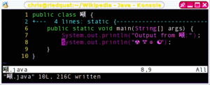

На странице обсуждения могут быть пояснения.

|
|
Эта статья должна быть полностью переписана. На странице обсуждения могут быть пояснения. |
| Процесс разработки ПО |
| Шаги процесса |
|---|
|
Анализ • Проектирование • Программирование • Документирование • Тестирование |
| Модели |
|
Итеративная • Спиральная • Каскадная • V-Model • Dual Vee Model |
| Методологии |
|
Agile (XP, Lean, Scrum, FDD и др.) • Cleanroom • OpenUP • RAD • RUP • MSF • DSDM • TDD |
| Сопутствующие дисциплины |
|
Конфигурационное управление Управление проектами Управление требованиями |
Шаблон: Просмотр • Обсуждение • Править
Программи́рование — процесс создания компьютерных программ.
В узком смысле (так называемое кодирование) под программированием понимается написание инструкций (программ) на конкретном языке программирования (часто по уже имеющемуся алгоритму — плану, методу решения поставленной задачи). Соответственно, люди, которые этим занимаются, называются программистами (на профессиональном жаргоне — кодерами), а те, кто разрабатывают алгоритмы — алгоритмистами, специалистами предметной области, математиками.
В более широком смысле под программированием понимают весь спектр деятельности, связанный с созданием и поддержанием в рабочем состоянии программ — программного обеспечения ЭВМ. Иначе это называется «программная инженерия» («инженерия ПО»). Сюда входят анализ и постановка задачи, проектирование программы, построение алгоритмов, разработка структур данных, написание текстов программ, отладка и тестирование программы (испытания программы), документирование, настройка (конфигурирование), доработка и сопровождение.
Программирование для ЭВМ основывается на использовании языков программирования, на которых записывается программа. Чтобы программа могла быть понята и исполнена ЭВМ, требуется специальный инструмент — транслятор.
В настоящее время активно используются интегрированные среды разработки, включающие в свой состав также редактор для ввода и редактирования текстов программ, отладчики для поиска и устранения ошибок, трансляторы с различных языков программирования, компоновщики для сборки программы из нескольких модулей и другие служебные модули.
Текстовый редактор среды программирования может иметь специфичную функциональность, такую как индексация имен, отображение документации, средства визуального создания пользовательского интерфейса. С помощью текстового редактора программист производит набор и редактирования текста создаваемой программы, который называют исходным кодом. Язык программирования определяет синтаксис и изначальную семантику исходного кода. Компилятор преобразует текст программы в машинный код, непосредственно исполняемый электронными компонентами компьютера. Интерпретатор создаёт виртуальную машину для выполнения программы, которая полностью или частично берёт на себя функции исполнения программ.

Антикитерский механизм из Древней Греции был калькулятором, использовавшим шестерни различных размеров и конфигурации, обусловливавших его работу,[1] по отслеживанию метонова цикла, до сих пор использующегося в лунно-солнечных календарях.[2] Аль-Джазари построил программируемый автомат-гуманоид в 1206 году. Одна система, задействованная в этих устройствах, использовала зажимы и кулачки, помещённые в деревянный ящик в определённых местах, которые последовательно задействовали рычаги, которые, в свою очередь, управляли ударными инструментами.
Часто первым программируемым устройством принято считать жаккардовый ткацкий станок, построенный в 1804 году Жозефом Мари Жаккаром, который произвёл революцию в ткацкой промышленности, предоставив возможность программировать узоры на тканях при помощи перфокарт.
Первое программируемое вычислительное устройство, Аналитическую машину, разработал Чарлз Бэббидж (но не смог её построить). 19 июля 1843 года графиня Ада Августа Лавлейс, дочь великого английского поэта Джорджа Байрона, как принято считать, написала первую в истории человечества программу для Аналитической машины. Эта программа решала уравнение Бернулли, выражающее закон сохранения энергии движущейся жидкости. В своей первой и единственной научной работе Ада Лавлейс рассмотрела большое число вопросов. Ряд высказанных ею общих положений (принцип экономии рабочих ячеек памяти, связь рекуррентных формул с циклическими процессами вычислений) сохранили свое принципиальное значение и для современного программирования. В материалах Бэббиджа и комментариях Лавлейс намечены такие понятия, как подпрограмма и библиотека подпрограмм, модификация команд и индексный регистр, которые стали употребляться только в 1950-х годах. Однако ни одна из программ написанных Адой Лавлейс никогда так и не была запущена.
Различные языки программирования поддерживают различные стили программирования (парадигмы программирования). Отчасти искусство программирования состоит в том, чтобы выбрать язык программирования, наиболее полно подходящий для решения поставленной задачи. Разные языки требуют от программиста различного уровня внимания к деталям при реализации алгоритма, результатом чего часто бывает компромисс между простотой и производительностью (или между временем программиста и временем пользователя).
Единственный язык, напрямую выполняемый ЭВМ — это машинный язык (также называемый машинным кодом и языком машинных команд). Изначально все программы писались в машинном коде, но сейчас этого практически уже не делается. Вместо этого программисты пишут исходный код на том или ином языке программирования, затем, используя компилятор, транслируют его в один или несколько этапов в машинный код, готовый к исполнению на целевом процессоре, или в промежуточное представление, которое может быть исполнено специальным интерпретатором — виртуальной машиной. Но это справедливо только для языков высокого уровня. Если требуется полный низкоуровневый контроль над системой на уровне машинных команд и отдельных ячеек памяти, программы пишут на языке ассемблера, мнемонические инструкции которого преобразуются один к одному в соответствующие инструкции машинного языка целевого процессора ЭВМ. (По этой причине трансляторы с языков ассемблера — ассемблера — получаются алгоритмически простейшими трансляторами.)
В некоторых языках вместо машинного кода генерируется интерпретируемый двоичный код «виртуальной машины», также называемый байт-кодом (byte-code). Такой подход применяется в Forth, некоторых реализациях Lisp, Java, Perl, Python, языках для .NET Framework.
| Для улучшения этой статьи желательно?: | |
 |
|
| [скрыть] |